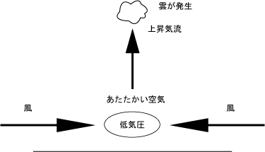
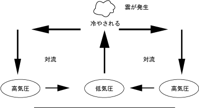
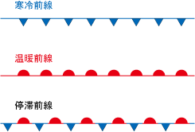

気象の世界観です。気象学を対象とします。地球も参照のこと。気象に詳しい父親の話を参考にしています。
まず、空気は水を含むということが重要である。地球の周りにある空気は、まるでぞうきんが水を含むように、水を含む性質がある。
そして、空気は、温度が高いほうが多くの水を含み、温度が低いほうが少ない水を含む。これを飽和水蒸気量と言う。
そして、空気が乾いていると、より多くの水を含む余地がある。空気が湿っていると、それ以上の水を含むことができなくなる。
なので、暖かい湿った空気を冷やすと、それ以上水を含むことができなくなって、水は外に出てしまう。これは水を含んだぞうきんを絞るのと同じである。
地球の気象において、このように空気が冷やされるのは二つの場合がある。ひとつは、湿った空気が上昇気流によって上へと上がり、上空の冷たい空気によって冷やされる場合。もうひとつは、冷たい空気と暖かい空気がぶつかり合った結果、暖かい空気が冷たい空気と交わることで冷やされる場合である。
夏の太陽は、地上・海上で多くの水を含んだ湿った空気をじりじりと温める。温められた空気は軽くなり、上昇気流になって上空へと上がっていく。そして上空で水をたくさん含んだ空気が冷やされる。ここで水は水滴となり、雲になる。雲とは空気に含まれた水が水滴となりながらまだ地上には降ってこない状態だ。この空気中の水滴が大きくなると、雲はどんどん厚くなり、入道雲のようになる。これが大きく発達すると、雲の中で浮かんでいるのが難しくなり、地上に降ってくる。これが雨である。夏には入道雲が発達しやすく、「夕立」がよく起きる。
また、大陸の冷たく乾いた高気圧と、太平洋上の暖かく湿った高気圧が、日本列島の付近でぶつかり合って、暖かい空気が冷たい空気によって冷やされて雨が降ることがある。このような暖かい空気と冷たい空気がぶつかり合う場所を「前線」と呼ぶ。そして、気象的な特性から、日本列島の前線は春と秋にできやすい。このため、これを春雨前線と秋雨前線と呼ぶ。前線では多くの雲が発生し、大雨をもたらすことがある。ただし春に比べて秋はそんなに前線が強くないため、晴れることが多く、よく「秋晴れ」と言われる。
また、地球全体のぐるぐる回る「対流」という空気の動きの結果、日本列島の周りでは偏西風が吹いている。偏西風は西から東に流れる。このため、天気は西にあった天気がそのまま東へと移動していく。このように考えることで、天気予報ができる。
北西の冬の季節風により、大陸の冷たく乾いた風が日本へとやってきます。この風は温かい日本海（暖流の対馬海流）で熱と水蒸気を吸収します。日本には山がたくさんあるので、この風は山の上へと上がって上昇気流となり、冷やされます。その結果、雨や雪が降り、北陸や日本海側のような地域では大雪になるのです。
後日注記：雪は長い間たくさん降ると雪下ろしや雪かきの作業が大変ですが、降った後に急に暖かくなると雪崩や落雪の危険があります。特に暖かかったり寒かったりを繰り返したり、あるいは雨が降ったりすると、雪が氷に変化して重たくなります。このような時は軒先には近づかないようにしましょう。
2025.12.15
2026.02.14編集
地球の周りには空気がある。この空気のことを大気と言う。気象学は、この空気の現象を考える学問である。
月のように、空気の無い星では、気象現象は起きない。地球の周りに空気があるからこそ、気象現象は起きる。
気象の基本は、「水」「空気」「雲」「雨」である。
空から降った雨は、地表を流れて川となり、海にそそぐ。
海にそそがれた水は、空気の水を含む性質によって蒸発して空気中に含まれる。太陽によって温められた空気はたくさんの水を含んで軽くなり、上昇気流となる。
その湿った空気は、高度が高くなって気圧が低くなることで膨張し、断熱変化（空気の自分だけによる温度の変化）によって気温が低くなる。飽和水蒸気量の限界を超えると、空気中から溢れて出てくる。この水の粒が雲である。
また、たくさんの雲が発生した場合は、厚い雲の中で、たくさんの水の粒同士が繋がって水滴となり、落下して雨となる。
ここでは、空気の水を含む性質と、気温の断熱変化、蒸発と雲の発生について説明する。
空気には、不思議な性質がある。その1つが、「水を含む」という性質である。
まるでティッシュペーパーやスポンジのように、目には見えないが、空気の性質として、「水を含む」という性質がある。
吸い取る、溶け込む、という言い方をしても良い。
この含まれる水の含有量について、含まれる水の量が多いほど、空気は湿った空気になる。水の量が少ないと、空気は乾いた空気になる。これを「湿度」と言う。
含有量には限度がある。限度を超えると、水は溢れ出して、それ以上含むことが出来なくなる。
そして、この限度は気温によって変わる。気温が高温であると、含むことのできる限度は大きくなり、たくさんの水を含むことができるようになる。逆に、気温が低温になると、同じ空気の量であっても、含むことのできる水の量は少なくなる。
限度がいっぱいになった時、もう水を含むことは出来なくなる。このことを「飽和」と言う。そして、水を含める限度のことを、飽和水蒸気量、あるいは飽和水蒸気圧と呼ぶ。
飽和量は、グラフにすると、気温が高くなればなるほど、右肩上がりに飽和量が増えていく。
飽和した時の湿度を「湿度100%」と表現するが、同じ湿度100%であっても、気温が高い場合と低い場合では、その水の量は変わってくる。気温30℃で湿度が50%だった場合、そのままの空気を気温20℃に冷やすと湿度が50%以上になって、気温10℃では湿度が100%を超えるかもしれない。この時、空気は飽和し、水が溢れだして出てくることになる。
空気の2つ目の性質として、気温が変化する、ということが挙げられる。そして、空気は「断熱変化」と呼ばれる、「外部からエネルギーを加えなくても、自分で気温が変化する」という性質を持つ。
断熱変化とは、外部からエネルギーを加える（たとえばストーブで燃やして空気を暖める）」ということではなく、自分だけの力で温度が変化する、ということである。
空気の断熱変化は、「圧縮すると気温が高くなり（断熱圧縮）、膨張すると気温が低くなる（断熱膨張）」。
地球の周りには、大気が存在する。大気は、重力によって地球の周りに引きつけられている。
大気は、高度が低いほど圧力が高く、高度が高いほど圧力が低い。
空気には重さがある。そして、この重さも、気温によって変わる。気温が高くなると、空気の重さは軽くなる。気温が低くなると、空気の重さは重くなる。
熱気球を考えてほしい。熱気球の中で温められた空気は軽くなり、上へと上昇していく。
ここまでの知識を基に蒸発と雲の発生を考えてみよう。
たくさんの海水が溜まった海において、空気は水を含むため、海水は蒸発して海の上空の空気に含まれる。
空気は太陽光によって温められたたくさんのあたたかい空気になる。空気があたたかくなると、蒸発する空気が多くなって、空気はたくさんの水を含むようになる。
また、あたためられた空気は、軽くなる。軽くなると、たくさんの水蒸気を含んだ湿った空気が上へと上昇する（上昇気流）。
上へと上がっていくと、高度が高くなり、気圧が低くなる。
気圧の低い高度へと上昇気流が上がっていくことで、空気は膨張して気温が低くなり、飽和量は少なくなる。これによって、水の粒が溢れて出てくる。これが雲である。
普通は、ここで、雲が発生して終わりである。
だが、夏の入道雲のように、上昇気流がたくさん発生すると、雲がとてもたくさん発生することになる。これによって雲は厚い雲の層になる。
厚い雲の中では、水の粒がたくさん発生する。水の粒は、たくさんの粒が繋がり合って水滴となる。これは下へと落下する。これが雨である。
これが、気象における雲と雨の発生の仕組みである。
積乱雲のように、とても高い高度に厚い雲が発生すると、気温が低く、水の粒が氷の粒になることがある。
これがゆっくりと発生した場合、氷の粒同士が繋がり合って、大きな雪の結晶になる。
下にある空気が暖かい場合は、氷は溶けて雨になる。だが、冬のように下にある空気も冷たい場合は、氷の結晶はそのまま雪として降ってくる。
また、急速に氷の粒が発生した時は、あられやひょうのように、大きな塊になって降ってくることがある。
雪の結晶は、とてもきれいな形をしている。氷の粒がゆっくりと冷やされながら形になっていくことで、幾何学的な雪の結晶になる。
火山の火口から発生するマグマなども、地表に出ることなく、地中でゆっくりと冷やされると、綺麗な結晶としてマグマが固まることがある。これによって、ダイヤモンドやルビー、サファイアなどの宝石や、その他の鉱物が生成される。
ものは、こすれ合ったりぶつかり合ったりした時に、電気を発生させることがある。これを静電気と言う。
積乱雲のような分厚い雲が発生した時、水や氷の粒がぶつかり合い、こすれ合って、静電気を発生することがある。
これはとても大きな静電気となって、雲の中や地上に放電することがある。これを、雷と言う。
雷は、静電気が放電した時に音と光になって空気中を伝わってくる。空気の振動である音よりも、光の方が伝わるのが速いため、まず光の「ピカッ」が伝わり、数秒経ってから音の「ゴロゴロ」や「ドーン」が聞こえる。
先に話したように、上昇気流が出来ると雲が出来て、雨が降る。
そして、上昇気流が生まれるのには、いくつかの種類がある。その主な例を挙げよう。
まず一つ目は、あたためられた空気が軽くなって上昇すること。
二つ目は、風がぶつかり合うことから上へ向かって上昇気流が発生する。
三つ目は、風が山にあたる。
四つ目は、前線である。
海上などで温められた空気は、軽くなって上へと上昇する。だが、この時、その場所で何が起きるだろうか？
それは、上へと空気が上昇したことで、気圧が少なくなって低気圧となる。
低気圧となると、周りから空気を引き寄せる。これが、先に挙げた二番目の、「風がぶつかり合う」ことを発生させる。
また、これは気体が液化して熱を放出するため、熱くなってどんどん発達する。これが、低気圧における雲の発生である。
低気圧には、雲と雨が発生しやすく、天気は悪くなる。

また、上昇した空気は冷やされて下へと向かうため、周りに「対流」が起きる。この時、下へ向かった空気は高気圧になる。
下へと下がった空気は、圧縮されて熱くなり、飽和水蒸気圧が上がる。このため、高気圧では雲が消える。
高気圧は天気が良くなる。

地球上には、北極や南極に冷たい空気があり、赤道付近には暖かい空気がある。
この両者のせめぎ合いは、おしくらまんじゅうのようになる。
冷たい空気が優勢の場合は、冷たい空気は重いため、寒気は下へともぐりこむように進む。暖気はその上を進み、そこに上昇気流が出来る。これを、寒冷前線と呼ぶ。
下へともぐりこむように進むため、急激な変化が現れる。このため、強い雨が降る。
寒冷前線は、寒い方から暑い方へと進んでいく。また、前線の通過後は気温が下がる。
暖かい空気が優勢の時は、軽い空気である暖気は上へと上がって進む。そこに上昇気流が出来る。これを、温暖前線と呼ぶ。
緩やかに這い上がるように進むため、長くおだやかな雨が降る。
温暖前線は、暑い方から寒い方へと進んでいく。また、前線の通過後は気温が上がる。
寒冷前線、温暖前線のあるところは、天気が悪くなる。
どちらの勢力も拮抗している時は、停滞前線と呼ぶ。
前線は、天気図では以下のように表す。

また、風が山に向いて吹いた場合の現象として、フェーン現象とよばれる現象がある。
山に向かって吹いた風は上昇し、雲を形成して雨を降らせるが、この空気は渇いた空気になって、山を越えて進んでいく。
この渇いた空気は、下落することで圧縮され、乾燥した熱い空気になる。
このように、日本海側から吹いた風が、太平洋側に向かうと、日本海側で雨や雪を降らせるため、太平洋側では、渇いた暑い空気の風になる。
これをフェーン現象と言う。
前回までの復習。
１．低気圧は、雲と雨が発生し、天気が悪くなる。
２．高気圧は、天気が良くなる。
３．前線は、天気が悪くなる。
予報のための基本は天気図である。
天気図は、地図の上に今の高気圧、低気圧、前線の様子を描いたもの。
全国の測候所で観測された「温度」「気圧」「風向」「風力」を基に描かれている。
手書きする時は、高気圧の部分や低気圧の部分を線で結び、前線などを描きこむ。
だが、これはあくまで「今の天気」である。では、天気がこれからどのように「変化」していくかを知るためにどうすれば良いのだろうか。
天気の基本的法則として、日本限定の話として、「天気は西から東へ移動する」ということがある。
これは、日本周辺の対流とそれによる偏西風によるものである。
地球上には「大気の大循環」と呼ばれる、大きな対流（空気が低気圧と高気圧の地点を結んでぐるぐる回っている場所）がいくつかあり、日本の周辺の北半球には3つほど対流がある。低気圧の部分を低圧帯、高気圧の部分を高圧帯と呼ぶ。
このことによって、日本の周辺では、南から北へと風が流れようとしている。だが、この風はまっすぐには流れない。地球が回転しているために、この風は「西から東へ」と流れる。これを、偏西風と言う。（この力の変化のことをコリオリの力と言う。）
偏西風が西から東に吹いていることで、日本の周辺では、西から東に天気が変化する。
これが、天気予報のための基本である。今からどのように天気が変化するかを見るためには、西の空、西の天気を見れば良い。
大気の大循環があることで、地球上の生物環境はとても大きな恩恵を受けている。対流は、温められた鍋のようなものでも発生するが、対流が無かったとしたら、温められた部分ばかりが熱くなって、全体の鍋の水を温めることは出来ない。大気の大循環も同じで、もし大循環がなかったとしたら、放っておくと北極・南極はものすごく寒くなり、赤道付近はものすごく熱くなってしまう。大気の大循環が地球にあるおかげで、北は寒すぎず、南は暑すぎない、空気の「熱の循環」が行われる。
自分の書いたブログ「神々とともに生きる詩人」2021/02/21より。
気象において、同じ風であっても、地上を吹く風と、海の上を吹く風、砂漠の上を吹く風では、風の吹き方が違う。
低空、すなわち地上に近い高さで吹く風と、高空、地上よりもとても高い場所で吹く風も違う。
昔の気象観測では、低空だけを観測して、天気を予想していた。
これでも、ある程度の観測はできる。
今の気象観測では、レーダーを使って、低空、中空、高空を観測する。
これにより、とても予想の精度が高くなった。
また、スーパーコンピュータを使って、気象のシミュレーションを行えるようになった。
最近はAI・人工知能を使うこともある。
生活の上で必要なのは、天気予報を見ることです。
天気予報はテレビや新聞などに記載されているほか、最近はインターネットでも見ることができます。
特に、移動手段に徒歩や自転車などを使われている方や、庭に衣服を干したりする時などに、天気予報は重要です。
重要なのは天気だけではありません。気温も重要です。温暖化の影響で、夏のように暑くなる日が夏ではなくても増えてきました。朝は冷えても昼暑くなることなどがあるため、衣服の調節などが必要です。
異常気象の影響から、ゲリラ豪雨やそれに伴う土砂災害など、災害にも注意しましょう。何かあった時のために防犯バッグを用意するなどの日頃からの対策が重要です。
後日注記：天気予報は、テレビの地デジのデータ放送などで、いつでも見ることができます。
後日注記：雨が降ると洗濯物が濡れてしまうほか、夏場などで窓を開けていると雨が吹き込むことがあります。なので、窓を開けていいかどうかを判断するために、一時間ごとの天気予報や、雨雲レーダーを見て、降水量や風の強さを確認しましょう。また、外出する時に傘が必要か気にしておき、折り畳み傘なども携帯しましょう。最近はYahoo!天気などのスマホアプリで天気予報を確認できます。
2024.05.15
2024.07.08編集
2025.09.20編集
北海道・東北・北陸や日本海側の地域など、雪の多く降る地域では、屋根が斜めに尖った形をしています。これは雪が積もらないようにするためです。
また、そのような地域では、道路に雪が積もるとどこが道路の端なのかが分からなくなってしまいます。なので、道路には「ここが道路の端」とする印が棒で立っており、除雪機などはその中を通ります。
また、道路に塩化カルシウムなどの袋が置いてあることがありますが、これは雪を溶かす融雪剤の役割があります。
後日注記：雪には吸音効果があるため、雪が降ると辺りが静かになります。この静かに雪が降る様子を「しんしんと雪が降る」などと表現することがあります。
2024.12.21
2024.12.28編集
台風を参照のこと。
温暖化を参照のこと。
地球も参照のこと。
力学も参照のこと。
地理も参照のこと。
Wikipedia